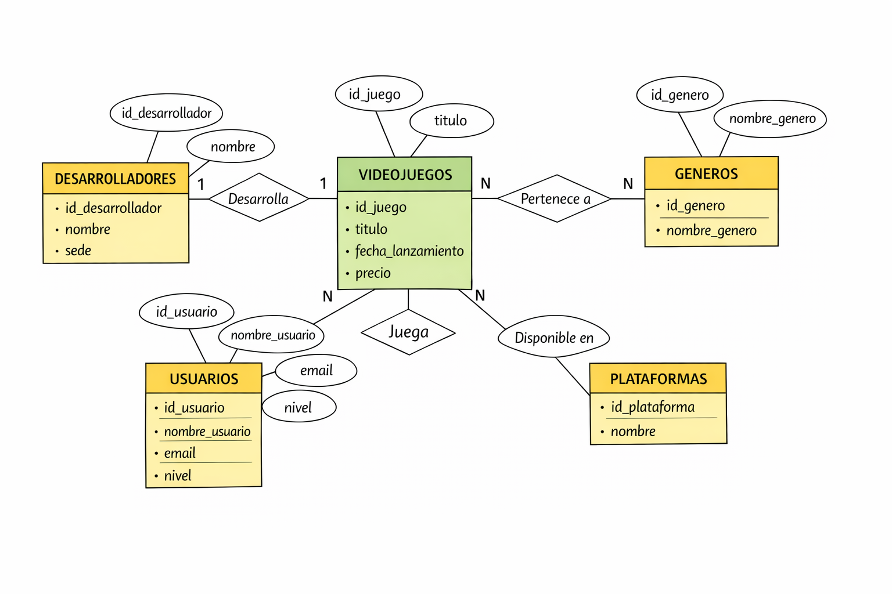
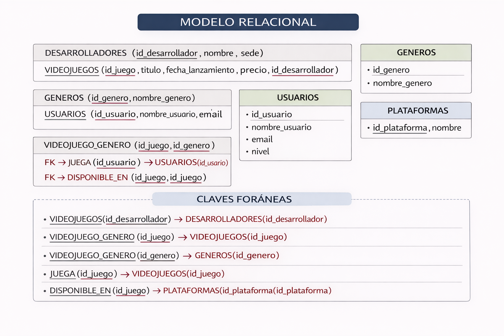
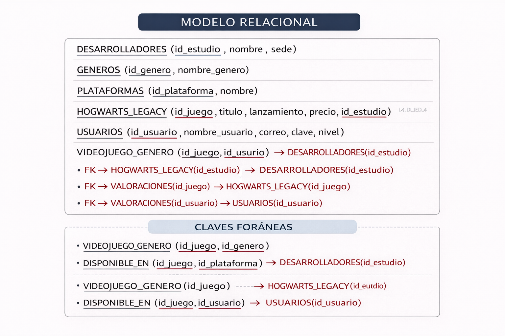
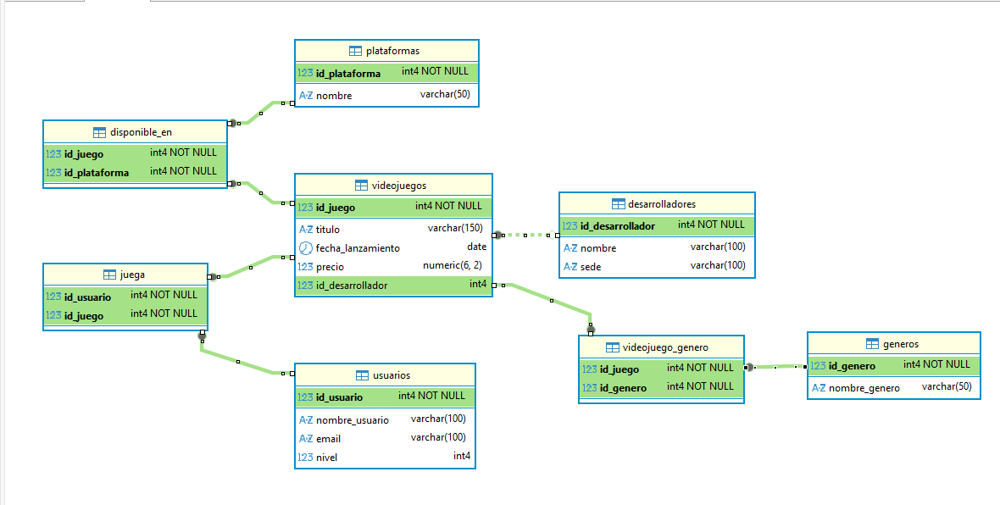
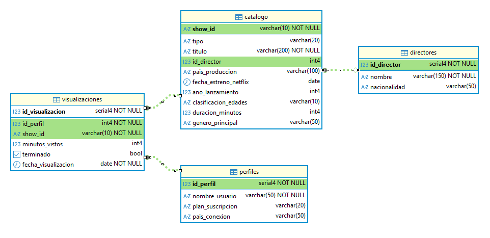
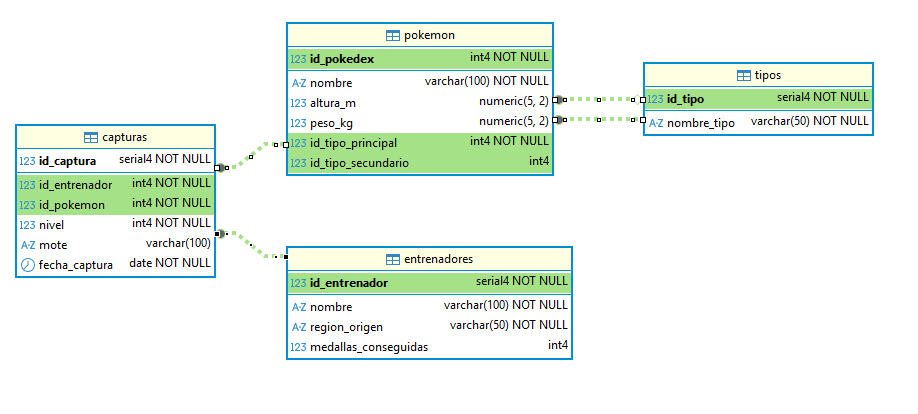

Ejemplos de BDs
BD Juego
Una empresa desarrolla un videojuego que puede estar disponible en varias plataformas (PC, consola, etc.). Los usuarios pueden jugar al videojuego y realizar valoraciones sobre él. Además, cada videojuego pertenece a uno o varios géneros (acción, RPG, aventura, etc.).




📘 EJERCICIOS DQL — UNA SOLA TABLA
- Mostrar todos los datos de la tabla VIDEOJUEGOS
- Mostrar solo el título y el precio de los videojuegos
- Mostrar todos los datos de los usuarios
- Mostrar los nombres de todas las plataformas
- Mostrar el nombre y la sede de los desarrolladores
- Mostrar los videojuegos cuyo precio sea mayor que 50
- Mostrar los usuarios con nivel mayor o igual a 10
- Mostrar los videojuegos lanzados después de 2020
- Mostrar los desarrolladores cuya sede sea "Tokyo"
- Mostrar los videojuegos con precio entre 20 y 60
- Mostrar los usuarios cuyo nombre empiece por "A"
- Mostrar los videojuegos ordenados por precio de mayor a menor
- Mostrar los videojuegos más baratos primero y solo los 3 primeros
- Mostrar los videojuegos con precio distinto de 50
- Mostrar los usuarios cuyo nivel esté entre 5 y 15
- Mostrar el precio máximo de los videojuegos
- Mostrar el precio mínimo de los videojuegos
- Mostrar el precio medio de los videojuegos
- Contar cuántos usuarios hay en la base de datos
- Mostrar cuántos videojuegos hay
- Mostrar los videojuegos cuyo título contenga la palabra "Legacy"
- Mostrar los usuarios cuyo email termine en ".com"
📘 EJERCICIOS JOIN — VIDEOJUEGOS
- Mostrar el título de los videojuegos junto con el nombre de su desarrollador
- Mostrar el título, precio y desarrollador de cada videojuego
- Mostrar el nombre de los usuarios y los juegos a los que juegan
- Mostrar el título de los juegos y sus géneros
- Mostrar el título de los juegos y las plataformas en las que están disponibles
- Mostrar los usuarios que juegan a videojuegos del género "RPG"
- Mostrar los videojuegos desarrollados por empresas cuya sede esté en Japón
- Mostrar los videojuegos disponibles en la plataforma "PC"
- Mostrar los usuarios que juegan al videojuego "Fortnite"
- Mostrar el título del videojuego, su género y su desarrollador
- Mostrar el número de usuarios que juegan a cada videojuego
- Mostrar el precio medio de los videojuegos por desarrollador
- Mostrar los videojuegos que tienen más de 2 usuarios
- Mostrar el número de videojuegos que hay en cada género
- Mostrar los videojuegos disponibles en más de una plataforma
- Mostrar el usuario que juega a más videojuegos
- Mostrar el videojuego más caro de cada desarrollador
- Mostrar los usuarios que juegan a videojuegos con precio mayor que 50
- Mostrar los videojuegos que pertenecen a más de un género
📘 EJERCICIOS CON SUBCONSULTAS — VIDEOJUEGOS
🟢 NIVEL BÁSICO
- Mostrar los videojuegos cuyo precio sea mayor que el precio medio de todos los videojuegos
- Mostrar los videojuegos más caros que “Elden Ring”
- Mostrar los usuarios cuyo nivel sea mayor que el nivel medio
- Mostrar los videojuegos más baratos que el precio medio
-
Mostrar los desarrolladores que tienen videojuegos más caros que 50 🟡 NIVEL MEDIO
-
Mostrar los videojuegos que tienen el precio máximo
- Mostrar los usuarios que juegan a algún videojuego (usando subconsulta)
- Mostrar los videojuegos que tienen al menos un usuario jugando
- Mostrar los usuarios que no juegan a ningún videojuego
- Mostrar los videojuegos cuyo desarrollador esté en Japón
🟠 NIVEL MEDIO-ALTO
- Mostrar los videojuegos que tienen más usuarios que la media
- Mostrar los usuarios que juegan a más videojuegos que la media
- Mostrar los desarrolladores que tienen más videojuegos que la media
- Mostrar los videojuegos que pertenecen a más de un género
- Mostrar los videojuegos disponibles en más plataformas que la media
🔴 NIVEL AVANZADO
- Mostrar el usuario que juega a más videojuegos (usando subconsulta)
- Mostrar los videojuegos más jugados
- Mostrar los desarrolladores cuyos videojuegos tienen un precio medio superior a la media global
- Mostrar los usuarios que juegan a videojuegos cuyo precio es mayor que el precio medio
- Mostrar las plataformas que tienen más videojuegos que la media
BD Netflix
📄 ENUNCIADO — Base de Datos NETFLIX
Se desea diseñar y trabajar con una base de datos que represente el funcionamiento básico de una plataforma de streaming similar a Netflix.
Esta base de datos almacena información sobre el catálogo de contenidos, los usuarios (perfiles) y el historial de visualización.
🧩 Descripción del sistema
La plataforma dispone de un catálogo de contenidos que incluye tanto películas como series. Cada contenido puede estar dirigido por un director, aunque en algunos casos esta información puede no estar disponible.
Los usuarios acceden a la plataforma a través de perfiles, cada uno con un tipo de suscripción y un país desde el que se conectan.
Cada vez que un usuario visualiza un contenido, se registra la visualización indicando cuánto tiempo ha visto, si ha terminado el contenido y la fecha en la que se produjo.

📘 EJERCICIOS SQL — NETFLIX (50 EJERCICIOS)
🟢 NIVEL BÁSICO (1–10)
- Mostrar todos los datos de la tabla catalogo
- Mostrar el título y tipo de todos los contenidos
- Mostrar los nombres de todos los directores
- Mostrar los perfiles y su plan de suscripción
- Mostrar los títulos de las películas
- Mostrar los títulos de las series
- Mostrar los contenidos producidos en Estados Unidos
- Mostrar los contenidos con clasificación '+18'
- Mostrar los perfiles que tienen plan Premium
- Mostrar los contenidos lanzados después de 2015
🟡 NIVEL MEDIO (11–20)
- Mostrar los contenidos con duración mayor a 120 minutos
- Mostrar los contenidos entre 2010 y 2020
- Mostrar los contenidos cuyo título contenga "Game"
- Mostrar los contenidos ordenados por año descendente
- Mostrar los perfiles ordenados por nombre
- Mostrar el número total de contenidos
- Mostrar el número de perfiles por país
- Mostrar la duración media de los contenidos
- Mostrar el año mínimo de lanzamiento
- Mostrar el año máximo de lanzamiento
🟠 NIVEL MEDIO-ALTO (JOIN) (21–35)
- Mostrar el título del contenido y el nombre del director
- Mostrar los contenidos con su nacionalidad del director
- Mostrar los perfiles y los contenidos que han visto
- Mostrar los contenidos visualizados por cada perfil
- Mostrar los contenidos que han sido visualizados
- Mostrar los perfiles que han visto contenidos
- Mostrar los contenidos con sus visualizaciones
- Mostrar el número de visualizaciones por contenido
- Mostrar el número de visualizaciones por perfil
- Mostrar los contenidos vistos por perfiles Premium
- Mostrar los contenidos vistos en España
- Mostrar los contenidos con su director y país
- Mostrar los contenidos que no tienen director
- Mostrar los perfiles que han terminado algún contenido
- Mostrar los contenidos no terminados por los usuarios
🔵 NIVEL AVANZADO (JOIN + GROUP BY) (36–40)
- Mostrar el contenido más visto
- Mostrar el perfil que más visualizaciones tiene
- Mostrar la media de minutos vistos por contenido
- Mostrar la media de minutos vistos por perfil
- Mostrar los contenidos con más de 2 visualizaciones
🔴 NIVEL MUY AVANZADO (SUBCONSULTAS) (41–50)
- Mostrar los contenidos cuyo precio (simulado por duración) sea mayor que la media
- Mostrar los contenidos con duración mayor que la media
- Mostrar los perfiles cuyo número de visualizaciones es mayor que la media
- Mostrar los contenidos más vistos (usando subconsulta)
- Mostrar el perfil que más contenido ha visto (subconsulta)
- Mostrar los contenidos que han sido vistos por todos los perfiles
- Mostrar los perfiles que han visto todos los contenidos
- Mostrar los contenidos que no han sido vistos por ningún perfil
- Mostrar los perfiles que no han visto ningún contenido
- Mostrar los contenidos cuya duración es igual a la máxima
BD POKEMON
📄 ENUNCIADO — Base de Datos POKÉMON
Se desea diseñar y trabajar con una base de datos que represente el mundo Pokémon, donde se almacena información sobre los Pokémon, sus tipos y los entrenadores que los capturan.
🧩 Descripción del sistema
En este sistema existen diferentes especies de Pokémon, cada una con uno o dos tipos elementales (por ejemplo, fuego, agua, planta, etc.).
Los entrenadores recorren distintas regiones y capturan Pokémon, pudiendo tener varios en su equipo. Cada Pokémon puede ser capturado por distintos entrenadores.
Cada captura queda registrada, indicando el nivel del Pokémon, un posible mote (nombre personalizado) y la fecha en la que fue capturado.

📘 EJERCICIOS SQL — POKEMON (50 EJERCICIOS)